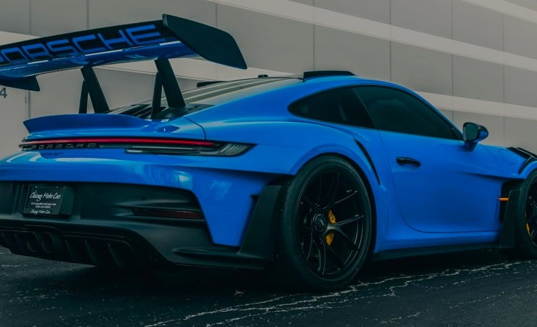
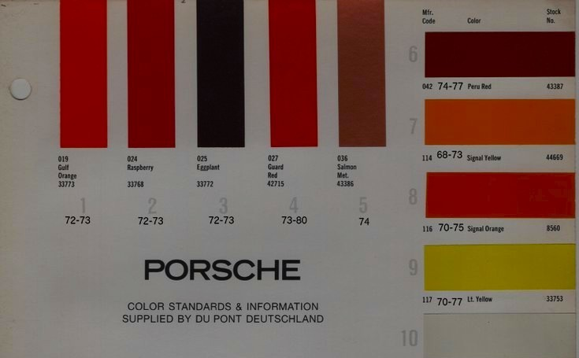
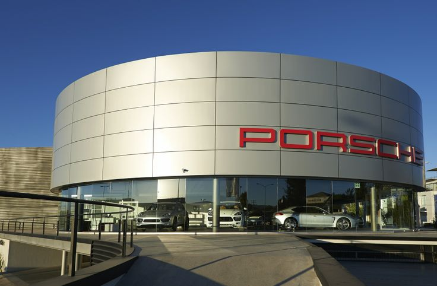
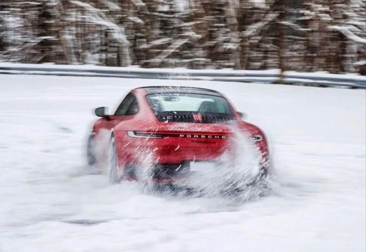

Explora la Gama 911

Configura tu Porsche Ideal

Localiza tu Porsche Center

Experiencia Porsche
Contacto
¿Preguntas?
Redes Sociales
Ponte en contacto con nosotros a través de las redes sociales.